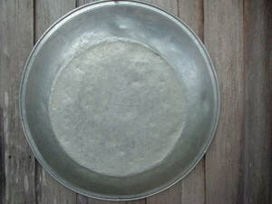

pelenggana 
/pɔlɔŋgana/
n.
“basin”
n.
wash tub
Makeung ka pelenggana wey malibusen ne innimu ligkat te plastik wey putew. Egtahuan seini te weyig wey duma pad piru innimu iya seini eyew egpamipian wey egtahuan te pinipian. Minsan nekey rè ka batek kayi su nakalkalasi se batek kayi.
Egbeli e pad te pelenggana su egtahuan ney te me manggad ne egpipian.
I am going to by a wash basin so that we can keep our clothes in it that need washing.
Eng. wash tub; tub; basin
Tag. banyéra
Ceb. palanggana
Ilo.: banyéra
OCM: Utensils (415)
Online dict status: -
Usage level: M
Updated by: RJH,JLM,TME
Last updated: 13/Oct/2009
"pelenggana" in healthbook "Mania te keilangan neg lu-luan ta ka me belad ta?"
"pelenggana" in healthbook "Mania te keilangan neg lu-luan ta ka me belad ta?"
"pelenggana" in healthbook "Mania te keilangan neg lu-luan ta ka me belad ta?"
"pelenggana" in healthbook "Mania te keilangan neg lu-luan ta ka me belad ta?"
This page last updated: 19/May/2012
Copyright © 2009-2010, Matigsalug Language Christian Association, Inc